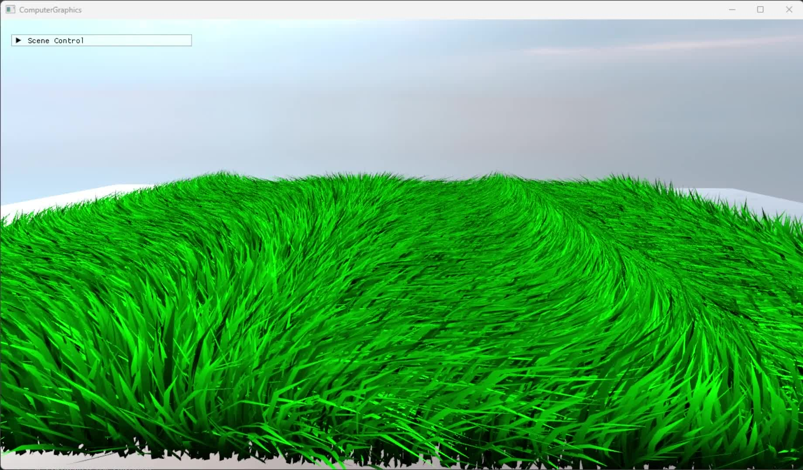

DirectX11 데이터 연결
버퍼·텍스처·상수 버퍼의 연결부터 DrawIndexed 호출까지 코드와 결과를 함께 설명합니다.
입력 데이터 → 셰이더 → 렌더 타깃
교재·강의 기반 학습 예제입니다. 개별 입력의 효과를 분리한 비교 실험은 아닙니다.
그래픽스 학습 예제의 원리·코드·실행 결과를 연결하고, AI를 활용해 기록·촬영 과정을 정리한 아카이브입니다.
교재·강의 기반 렌더링·입력·애니메이션·GPU 연산 예제를 다룹니다. 학습 설명과 아카이브 자동화의 문제 해결을 각각 살펴볼 수 있습니다.
그래픽스 학습과 자동화, 두 가지 읽기 경로
학습 예제 실행 영상 보기
그래픽스 예제를 학습하고 문서·촬영 규격과 조건을 제시했습니다. 대표 산출물과 실행 결과를 검토하며 오류 대응 방향을 보완했습니다.
코드·학습 기록 조사, 문서화와 촬영 도구 구현, 반복 실행·촬영·검사를 수행했습니다. 별도 재현 사본의 수정·추가 검증은 당시 작업과 구분합니다.
교재·강의 기반 예제를 학습·구현하고, Codex를 활용해 기록·촬영 과정을 정리했습니다.
버퍼·텍스처·상수 버퍼의 연결부터 DrawIndexed 호출까지 코드와 결과를 함께 설명합니다.
입력 데이터 → 셰이더 → 렌더 타깃
교재·강의 기반 학습 예제입니다. 개별 입력의 효과를 분리한 비교 실험은 아닙니다.
X 방향은 A 읽기·B 쓰기, Y 방향은 B 읽기·A 쓰기로 SRV/UAV를 교대합니다.
각 패스의 출력을 다음 패스의 입력으로 사용
바인딩 해제는 GPU 완료 대기나 성능 개선 측정을 의미하지 않습니다.
Pivot 보존 옵션에 따른 본 계층·채널 매칭과 보행 결과를 비교했습니다.
5개 클립 구조 검사 · 보행 재생 비교
양쪽에 초기 자세 보완을 동일 적용한 재현 사본입니다. 해당 추가 보완의 원본 반영·모든 클립 재생을 의미하지 않습니다.
오류 창을 닫은 뒤 후속 창과 잔존 여부를 재확인하고 결과를 구분했습니다.
합성 창 5조건 × 3회 · 정리 성공과 실패 감지 구분
실제 DLL 복구·촬영 재개까지 검증한 결과는 아닙니다.
프로젝트 한 편과 세 프로젝트 통합본을 구분해 제공합니다.
스켈레탈 애니메이션·연기·잔디의 기존 시연입니다.
오류 창 정리와 Assimp 비교 조건·결과를 확인합니다.
전체 학습 주제와 관련 원문으로 이동합니다.
소스 코드와 README, 개발·학습 문서를 확인합니다.